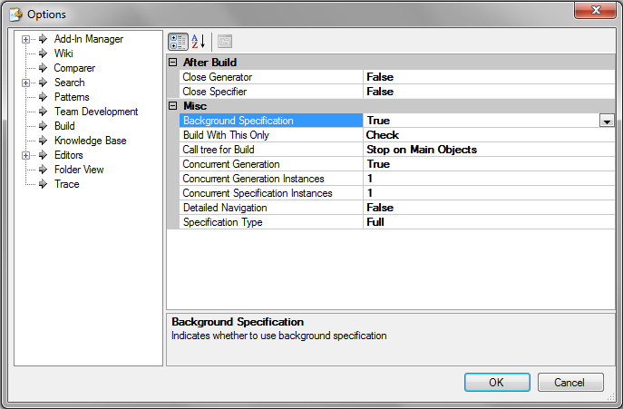

In this node, you can configure certain features concerning tasks on Specification and Generation, among others.

If desired, the Specificator and Generator can be run in parallel mode. Both properties allow for the desired setup. Default values are "False" in both cases.
| Background Specification | The Background Specification feature is used to speed up the building process as it allows to specificate the objects when they are saved and reuse this specification at the build process. |
| Build with this only | This property makes it possible to force the generation of a non-main object and has two possible values: “Force generation” indicates that even though the object doesn't have any changes that require generation, it will be generated anyway. The “Check” (default) value will have the object checked for changes, and if changes are found it will be generated; otherwise, it won't. |
| Call tree for Build | This property allows the call tree in the Build process to be configured. The possible values are "Stop on Main Objects," which indicates that after F5/Build only those objects that have been changed since the last build and may be reached by the "StartUp Object/Developer Menu" will be re-generated, provided there isn’t a Main object between them. The "Full" value does not cut the call tree, even when there’s a Main object between the “StartUp Object” and the object that was modified (both the Main and the modified object are generated). |
| Concurrent Generation | When this option is not activated (False value), upon performing the Build, all elements necessary are specified first. The generator will start working on the generation of whatever is needed only after the specifier has completed its task. When the option is activated (True value), the specifier and the generator will run concurrently. As the specifier processes objects and generates its specs, it “informs” the generator for the latter to generate such objects. This allows for a better use of PCs with more than one core.The default value is False. |
| Concurrent Generation Instances | Sets the number of concurrent generators instances. |
| Concurrent Specification Instances | Sets the number of concurrent specifitaros instances. |
| Detailed Navigation | The detailed navigation report includes more information than the standard one. It offers analysts more information on how the program will be generated (i.e.: triggered actions). The drawback is that it takes longer to generate this type of navigation information. The default value is False. |
| Specification Type |
Verifies changes occurred in the program source and tables used by the object. If changes are detected, then a "Full" specification of the object is to be performed. It is very important to bear in mind that the date of the machine must always be correct. Otherwise, the mechanism will not work, or worse yet: it will function incorrectly. The default value is "Full". This option has been removed as of GeneXus 17 Upgrade 8. See SAC #50624 for more details. |
Multiple Concurrent Generator and Specifier Instances
| Backlinks | ||
| Background Specification | Call tree for build option | Category:IDE Configuration Options |
| Multiple Concurrent Generator and Specifier Instances |